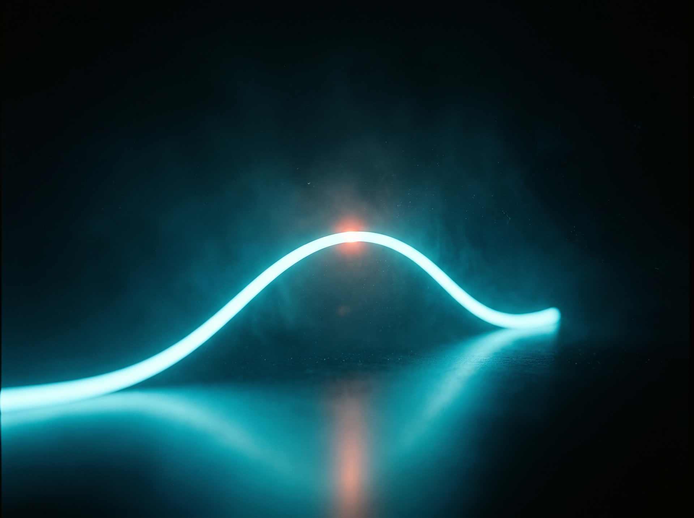

El caos silencioso que nadie puso en el presupuesto
Muchas pymes operan con planillas, WhatsApp y sistemas sueltos. Funciona, hasta que no: errores, duplicidad de datos y una dependencia total de la persona que "sabe cómo se hace esto".
Decidimos desde la urgencia: atendemos lo que explota primero, no lo que importa más.
Dueño de pyme de serviciosSi la persona que maneja la planilla se enferma o se va, el proceso completo se detiene con ella.
Dependencia operativaCompramos una herramienta potente que el equipo nunca aprendió a usar. Fue dinero tirado.
Sobre el software genéricoSin plantillas. El proceso real, primero
Ningún cambio serio empieza por la solución. Empieza por leer cómo trabaja tu equipo hoy, paso a paso, sin apurarse.
Diagnóstico del proceso real
Observamos cómo trabaja tu equipo hoy: qué planillas usan, dónde se traba la información, quién carga con qué. Sin apurar la solución.
Diseño a la medida
Trazamos el proceso ideal para tu operación específica, no para una plantilla genérica. Cada automatización se dibuja para tu negocio.
Construcción e integración
Conectamos tus herramientas actuales entre sí, sin obligar a tu equipo a aprender un sistema nuevo desde cero.
Soporte después de la entrega
Seguimos siendo el socio que responde, no el proveedor que entrega y desaparece.
Lo que hacemos, en concreto
Cada servicio nace del diagnóstico. Nada se vende suelto sin entender primero tu proceso.
Integración de sistemas
Conectamos las herramientas que ya usas para que dejen de vivir aisladas entre sí.
Automatización de procesos
Tareas repetitivas de cobranza, reportes o seguimiento, hechas por el sistema, no por una persona.
Dashboards a medida
Un panel que responde las preguntas que tu negocio realmente hace, no las que trae la plantilla.
Acompañamiento continuo
Ajustamos y mejoramos el sistema a medida que tu negocio cambia. No es una entrega única.
Trazado a tu medida, no forzado a una plantilla
Sin curva de aprendizaje forzada
Nos adaptamos a cómo tu equipo ya trabaja, en vez de exigirles aprender un sistema nuevo de cero.
Metodología propia, no plantilla
Cada biplot es distinto porque parte de datos reales, no de un molde. Cada automatización nuestra funciona igual.
Soporte real después de la entrega
Seguimos disponibles cuando el proceso cambia, no solo el día del lanzamiento.
Casos concretos, no promesas genéricas
Mostramos resultados reales, como Fundos 360, en vez de afirmaciones sobre "ser los mejores en IA".

Fundos 360
Fundos 360 operaba con reportes armados a mano, mes a mes, cruzando planillas de distintas fuentes. Diagnosticamos el proceso completo y construimos una automatización a su medida que conecta sus fuentes de datos y entrega el reporte listo, sin intervención manual.
Precios claros, sin letra chica
El diagnóstico define el alcance real antes de cualquier número. Estos son los tres caminos más comunes.
Diagnóstico
- Revisión de tu proceso actual
- Mapa de dónde se pierde tiempo
- Propuesta de alcance, sin compromiso
Proyecto a medida
- Automatización diseñada para tu proceso
- Integración con tus herramientas actuales
- Acompañamiento durante el lanzamiento
Soporte continuo
- Ajustes cuando tu proceso cambia
- Monitoreo de las automatizaciones activas
- Canal directo de soporte
Seis décadas, la misma línea
Antes de BiPlot, un proceso de negocio pasó por el papel, el terminal, el software genérico y el ruido de mil herramientas. Recorre las épocas.
Tu proceso es el próximo punto de esta curva
Mantén presionado para trazar tu propio punto en la línea de BiPlot.
presionado
Antes de que preguntes
No es el objetivo. Diseñamos la automatización para que se apoye en las herramientas que tu equipo ya conoce, en vez de forzar una curva de aprendizaje nueva.
Seguimos siendo tu punto de contacto. El plan de soporte continuo existe justamente para ajustar el sistema cuando tu negocio cambia, no solo para el lanzamiento.
Depende del alcance definido en el diagnóstico. Un proceso acotado puede automatizarse en semanas; una integración más amplia toma más tiempo, y siempre lo conversamos con plazos reales antes de empezar.
No. Trabajamos con pymes de servicios profesionales que sienten que su operación creció más rápido que sus procesos.
Agenda tu diagnóstico
Cuéntanos cómo trabaja tu equipo hoy. Nosotros te decimos qué se puede automatizar y cuánto tomaría.
Una sesión corta, sin costo, para entender tu proceso. Si no hay algo real que automatizar, te lo decimos de frente.